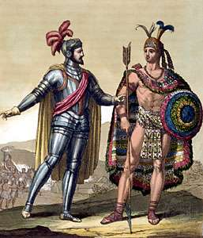
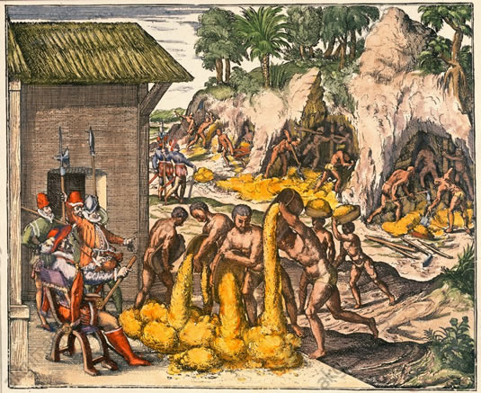

Introduction
God, glory and gold were the three core forces that defined numerous periods of American history and in turn shaped how modern Western society evolved. The precolonial age is a primary example of a period heavily influenced by these forces. In fact, this period was one of the only ones in which god, glory and gold were all significant factors. That was because it was the period where all three elements originated as the defining goals of early New World settlers. Explorers and settlers came to the new world in hopes of achieving goals such as religious freedom, fame or fortune. While all three elements play a part in shaping American culture, research reveals that gold was the primary driving force on settlers and explorers in the precolonial period, and remains a key influence on Americans of today and tomorrow.
Historical Influence
The precolonial age was a time of exploration and expansion. European societies had recently discovered the Americas and were scrambling to carve out territory for themselves. The European explorers came seeking many things when they reached the new world, but above all else they sought wealth, they sought fame and they sought to establish a religious presence. Of these, almost all groups were looking to make a profit in one way or another. Explorers like Frenchman Charles la Potherie and Englishman John Smith sought to explore the world and establish a lasting impact on the region for themselves and their country. This usually took the form of discovering riches or harvestable goods or establishing trade with (or exploiting) the Natives for profit. At the forefront of this quest for wealth were the Spanish. The Spanish nation was one of the first to make headway into the Americas and one of the most driven to accrue wealth, resources and land. “In the wake of Columbus’s voyages, Spanish explorers took to the seas to claim new colonies for Spain. Lured by the prospect of vast lands filled with gold and silver, these explorers, known as conquistadors (conquerors), pushed first into the the Caribbean region then… through Mexico and south to the tip of South America” (Danzer et al pg. 36). These early conquests yielded bountiful riches for the Spanish, with expeditions like Hernando Cortes’s conquest of the Aztec empire producing both new territory and a bounty of gold artifacts. However, these successes did not come peacefully. The Spanish campaigns were marked by cruelty and violence. According to Bartolomé de las Casas “the Spaniards, who no sooner had knowledge of these people than they became like fierce wolves and tigers and lions who have gone many days without food or nourishment. And no other thing have they done for forty years until this day, and still today see fit to do, but dismember, slay, perturb, afflict, torment, and destroy the Indians by all manner of cruelty” (Casas, Document A). The obsessive desire for wealth and land caused many interactions between natives and European settlers to follow this pattern. Later, as many European explorers established early settlements, systematic exploitation of the natives continued. Once again, it was most prominent in Spanish settlements due to the encomienda system. “Although the original intent of the encomienda was to reduce the abuses of forced labor employed shortly after the discovery of the New World, in practice it became a form of enslavement” (Encomienda Spanish Policy). Greed led former conquistadors and soldiers to exploit thousands of Native Americans for profit under brutal and violent conditions. The ideal of gold during this time period manifested as unchecked and obsessive greed, which in turn created violence and exploitation in the name of profit.
Modern Day Influence
This ideal has also manifested in our current society. Today it takes the form of big business and large corporations. “The wealthiest 1 percent of households own 40 percent of the country's wealth” (Ingraham 2017). The rich get richer by siphoning money from the poor, and exploiting workers. According to The Journal, “massive brands like Adidas, Converse, Abercrombie and Fitch, Victoria’s Secret and Billabong are routinely breaking every rule in the book when it comes to labour rights” (The Journal 2011). Even today, the poor are exploited by the powerful for profit. It is clear that the precolonial ideal of gold never disappeared over the centuries. If big business of today continues to mirror the conquistadors of the precolonial age big problems could be right around the corner. As Spain took in large amounts of silver and gold from the Americas they, “felt wealthier, because they actually were wealthier. But because, at the margins, their society was less-well-positioned to increase its productive capacity, capital flowed to better-positioned societies” (Millman p.2). This is an example of a problem based on Spain’s previous financial instability. Should these issues continue to be exacerbated over time a similar outcome could result. On the other hand, the collapse of the encomienda system could foretell a collapse for big business in the near future. After years of abuse under the encomienda system, “the catastrophic decline in the Indian population and the replacement of mining activities by agriculture, the system lost its effectiveness and [was] abolished [in] the late 18th century” (Encomienda Spanish Policy). Continued cruelty and abuse used to seek profit could cause a similar decline in today’s society and collapse the system that the current economy is so heavily based on.
Conclusion
An obsessive desire for wealth manifested in precolonial times in the form of “noble quests” for gold. In reality, these expeditions were marked by savagery and violence towards the innocent inhabitants of the Americas. Even in today’s society, choices are made that parrot the actions of conquistadors and the encomienda system. The history of the Americas is fraught with examples of groups and individuals obsessively driven for wealth and power who became corrupted by their greed. This mentality is still prevalent today and can no longer be overlooked. It is a problem that can only be addressed by society as a whole.